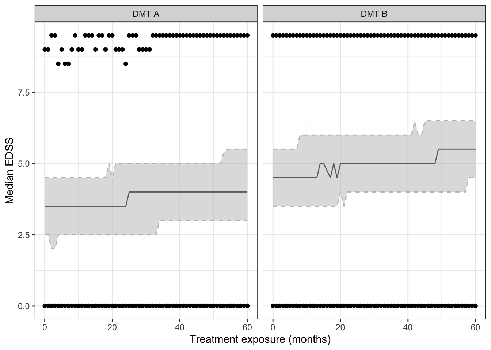
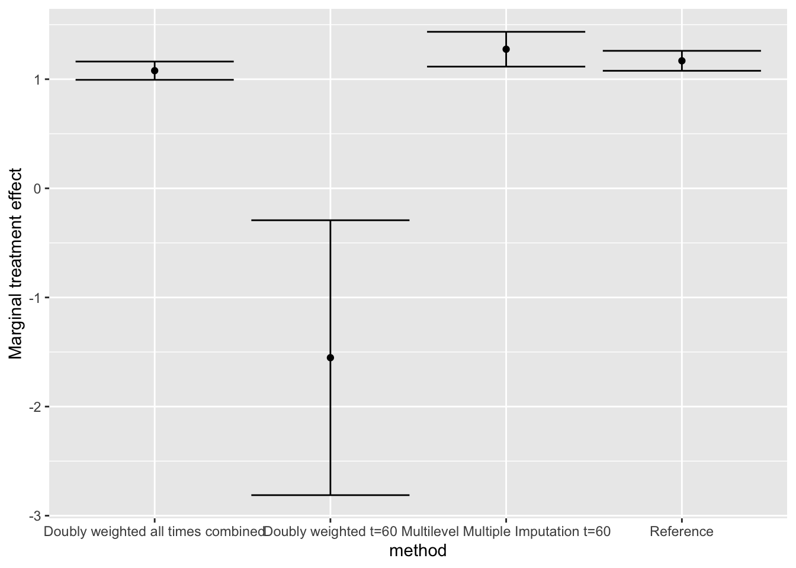

install.packages(c(
"dplyr", "broom", "ggplot2", "mice",
"nlme", "MASS", "truncnorm", "sparseMVN",
"gridExtra", "Matrix"
))Chapter 14 — Dealing with irregular and informative visits
Janie Coulombe ![]()
Thomas P.A. Debray
Software requirements
This chapter uses R scripts for simulating longitudinal data, visualizing EDSS trajectories, and implementing multilevel multiple imputation. The following R packages are required:
The results of the multilevel multiple imputation are provided as a precomputed data file. Readers can reproduce the analyses without rerunning the computationally intensive imputation procedure.
The supporting R scripts and precomputed imputation results are available below:
Introduction
We first load the relevant R scripts:
source("resources/chapter_14/sim.r")
source("resources/chapter_14/fig_functions.r")
source("resources/chapter_14/mlmi.r")Example dataset
Below, we generate an example dataset that contains information on the treatment allocation x and three baseline covariates age, sex and edss (EDSS at treatment start). The discrete outcome y represents the Expanded Disability Status Scale (EDSS) score after time months of treatment exposure. Briefly, the EDSS is a semi-continuous measure that varies from 0 (no disability) to 10 (death).
set.seed(9843626)
dataset <- sim_data_EDSS(npatients = 500,
ncenters = 10,
follow_up = 12*5,
sd_a_t = 0.5,
baseline_EDSS = 1.3295,
sd_alpha_ij = 1.46,
sd_beta1_j = 0.20,
mean_age = 42.41,
sd_age = 10.53,
min_age = 18,
beta_age = 0.05,
beta_t = 0.014,
beta_t2 = 0,
delta_xt = 0,
delta_xt2 = 0,
p_female = 0.75,
beta_female = -0.2 ,
delta_xf = 0,
rho = 0.8,
corFUN = corAR1,
tx_alloc_FUN = treatment_alloc_confounding_v2)`summarise()` has grouped output by 'time'. You can override using the
`.groups` argument.
We remove the outcome y according to the informative visit process that depends on the received treatment, gender, and age.
dataset_visit <- censor_visits_a5(dataset, seed = 12345) %>%
dplyr::select(-y) %>%
mutate(time_x = time*x)In the censored data, a total of 17 out of 5000 patients have a visit at time=60.
Estimation of treatment effect
We will estimate the marginal treatment effect at time time=60.
Original data
origdat60 <- dataset %>% filter(time == 60)
# Predict probability of treatment allocation
fitps <- glm(x ~ age + sex + edss, family = 'binomial',
data = origdat60)
# Derive the propensity score
origdat60 <- origdat60 %>%
mutate(ipt = ifelse(x == 1, 1/predict(fitps, type = 'response'),
1/(1 - predict(fitps, type = 'response'))))
# Estimate
fit_ref_m <- tidy(lm(y ~ x, weight = ipt, data = origdat60), conf.int = TRUE) Doubly-weighted marginal treatment effect
We here implement inverse probability of response weights into the estimating equations to adjust for nonrandom missingness Coulombe et al. (2020).
obsdat60 <- dataset_visit %>%
mutate(visit = ifelse(is.na(y_obs),0,1)) %>%
filter(time == 60)
gamma <- glm(visit ~ x + sex + age + edss,
family = 'binomial', data = obsdat60)$coef
obsdat60 <- obsdat60 %>% mutate(rho_i = 1/exp(gamma["(Intercept)"] +
gamma["x"]*x +
gamma["sex"]*sex +
gamma["age"]*age))
# Predict probability of treatment allocation
fitps <- glm(x ~ age + sex + edss, family='binomial', data = obsdat60)
# Derive the propensity score
obsdat60 <- obsdat60 %>%
mutate(ipt = ifelse(x==1, 1/predict(fitps, type='response'),
1/(1 - predict(fitps, type='response'))))
fit_w <- tidy(lm(y_obs ~ x, weights = ipt*rho_i, data = obsdat60),
conf.int = TRUE)Multilevel multiple imputation
We adopt the imputation approach proposed by Debray et al. (2023). Briefly, we impute the entire vector of y_obs for all 61 potential visits and generate 10 imputed datasets. Note: mlmi currently does not support imputation of treatment-covariate interaction terms.
imp <- impute_y_mice_3l(dataset_visit, seed = 12345)We can now estimate the treatment effect in each imputed dataset
# Predict probability of treatment allocation
fitps <- glm(x ~ age + sex + edss, family = 'binomial', data = dataset_visit)
# Derive the propensity score
dataset_visit <- dataset_visit %>%
mutate(ipt = ifelse(x == 1, 1/predict(fitps, type = 'response'),
1/(1 - predict(fitps, type = 'response'))))
Q <- U <- rep(NA, 10) # Error variances
for (i in seq(10)) {
dati <- cbind(dataset_visit[,c("x","ipt","time")], y_imp = imp[,i]) %>%
filter(time == 60)
# Estimate
fit <- tidy(lm(y_imp ~ x, weight = ipt, data = dati), conf.int = TRUE)
Q[i] <- fit %>% filter(term == "x") %>% pull(estimate)
U[i] <- (fit %>% filter(term == "x") %>% pull(std.error))**2
}
fit_mlmi <- pool.scalar(Q = Q, U = U)Reproduce the results using all data to compute the marginal effect with IIV-weighted
Doubly -weighted marginal treatment effect total
obsdatall <- dataset_visit %>% mutate(visit = ifelse(is.na(y_obs),0,1))
gamma <- glm(visit ~ x + sex + age + edss, family = 'binomial', data = obsdatall)$coef
obsdatall <- obsdatall %>% mutate(rho_i = 1/exp(gamma["(Intercept)"] +
gamma["x"]*x +
gamma["sex"]*sex +
gamma["age"]*age))
# Predict probability of treatment allocation
fitps <- glm(x ~ age + sex + edss, family='binomial', data = obsdatall)
# Derive the propensity score
obsdatall <- obsdatall %>% mutate(ipt = ifelse(x==1, 1/predict(fitps, type='response'),
1/(1-predict(fitps, type='response'))))
fit_w <- tidy(lm(y_obs ~ x, weights = ipt*rho_i, data = obsdatall), conf.int = TRUE)Results

Version info
This chapter was rendered using the following version of R and its packages:
R version 4.5.1 (2025-06-13)
Platform: aarch64-apple-darwin20
Running under: macOS Sequoia 15.5
Matrix products: default
BLAS: /Library/Frameworks/R.framework/Versions/4.5-arm64/Resources/lib/libRblas.0.dylib
LAPACK: /Library/Frameworks/R.framework/Versions/4.5-arm64/Resources/lib/libRlapack.dylib; LAPACK version 3.12.1
locale:
[1] en_US.UTF-8/en_US.UTF-8/en_US.UTF-8/C/en_US.UTF-8/en_US.UTF-8
time zone: Asia/Jakarta
tzcode source: internal
attached base packages:
[1] stats graphics grDevices utils datasets methods base
other attached packages:
[1] sparseMVN_0.2.2 truncnorm_1.0-9 MASS_7.3-65 nlme_3.1-168
[5] mice_3.18.0 ggplot2_4.0.3 broom_1.0.9 dplyr_1.1.4
loaded via a namespace (and not attached):
[1] generics_0.1.4 tidyr_1.3.1 shape_1.4.6.1 lattice_0.22-7
[5] lme4_1.1-37 digest_0.6.37 magrittr_2.0.3 mitml_0.4-5
[9] evaluate_1.0.4 grid_4.5.1 RColorBrewer_1.1-3 iterators_1.0.14
[13] fastmap_1.2.0 foreach_1.5.2 jomo_2.7-6 jsonlite_2.0.0
[17] glmnet_4.1-10 Matrix_1.7-3 nnet_7.3-20 backports_1.5.0
[21] survival_3.8-3 purrr_1.2.2 scales_1.4.0 codetools_0.2-20
[25] Rdpack_2.6.4 reformulas_0.4.4 cli_3.6.5 rlang_1.3.0
[29] rbibutils_2.3 splines_4.5.1 withr_3.0.2 yaml_2.3.10
[33] pan_1.9 tools_4.5.1 nloptr_2.2.1 minqa_1.2.8
[37] boot_1.3-31 rpart_4.1.24 vctrs_0.7.3 R6_2.6.1
[41] lifecycle_1.0.4 htmlwidgets_1.6.4 pkgconfig_2.0.3 pillar_1.11.0
[45] gtable_0.3.6 glue_1.8.0 Rcpp_1.1.0 xfun_0.62
[49] tibble_3.3.0 tidyselect_1.2.1 rstudioapi_0.17.1 knitr_1.50
[53] farver_2.1.2 htmltools_0.5.8.1 labeling_0.4.3 rmarkdown_2.29
[57] compiler_4.5.1 S7_0.2.0 References
Coulombe, Janie, Erica E. M. Moodie, and Robert W. Platt. 2020. “Weighted Regression Analysis to Correct for Informative Monitoring Times and Confounders in Longitudinal Studies.” Biometrics 77 (1): 162–74. https://doi.org/10.1111/biom.13285.
Coulombe, Janie, Erica E. M. Moodie, Robert W. Platt, and Christel Renoux. 2022. “Estimation of the Marginal Effect of Antidepressants on Body Mass Index Under Confounding and Endogenous Covariate-Driven Monitoring Times.” The Annals of Applied Statistics 16 (3). https://doi.org/10.1214/21-aoas1570.
Debray, Thomas PA, Gabrielle Simoneau, Massimiliano Copetti, et al. 2023. “Methods for Comparative Effectiveness Based on Time to Confirmed Disability Progression with Irregular Observations in Multiple Sclerosis.” Statistical Methods in Medical Research, June, 096228022311720. https://doi.org/10.1177/09622802231172032.